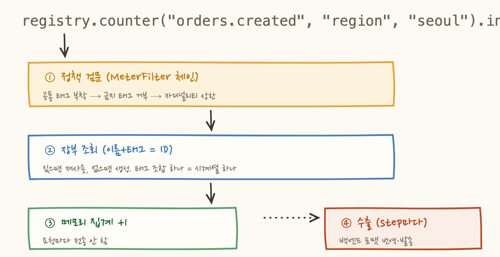

2편. 미터의 해부학 : 게이지는 체중계, 카운터는 가계부
3편. 집계의 함정 : 평균의 평균은 평균이 아니다 ← 지금 이 글
퀴즈 하나로 시작할게요. 서버 3대가 각자 자기 p95를 보고했습니다. 200ms, 250ms, 900ms였어요. 그럼 서비스 전체의 p95는 몇일까요?
평균 내서 450ms? 제일 나쁜 900ms? 정답은... 계산 불가능입니다. 이 세 숫자로는 어떤 수학을 동원해도 전체 p95가 안 나와요. 왜 그런지, 그리고 관측 시스템들이 이 문제를 어떻게 푸는지가 이번 편의 전부예요. 미터를 아무리 잘 골라도(2편) 집계에서 틀리면 대시보드가 거짓말을 하거든요.
1. 평균의 평균은 평균이 아니다
몸풀기로 쉬운 함정부터 짚어보죠. 서버 두 대의 평균 응답시간을 합쳐볼게요:
A는 겨우 10건인데 절반의 발언권을 얻었어요. 이래서 평균은 합칠 수 없는 완성품이에요. 합치려면 재료, 즉 합계와 카운트가 필요하죠. 2편에서 본 타이머가 평균이 아니라 합계와 카운트를 따로 보내는 이유가 이거예요. 원자료를 보내두면 백엔드가 어떤 조합으로든(서버별, 리전별, 시간대별) 올바르게 재집계할 수 있으니까요. 집계 규칙 1번: 나눗셈은 항상 마지막에 합니다.
2. 평균은 아무도 겪지 않은 시간이다
그런데 올바르게 계산한 평균조차 레이턴시 앞에서는 힘을 잃어요. 레이턴시는 종 모양 분포가 아니거든요. 캐시에 맞은 요청(5ms 근처 봉우리)과 빗나간 요청(200ms 근처 봉우리), GC에 걸린 요청(1초 꼬리)이 섞인 다봉(multimodal) 분포예요.

이런 분포에서 "평균 80ms"는 아무도 경험하지 않은 시간이에요. 사용자는 5ms 아니면 200ms를 겪는데, 보고서는 그 사이의 유령 값을 말하고 있는 거죠. 그래서 레이턴시는 평균 대신 퍼센타일(p95, p99)로 봐야 해요. "요청의 95%가 이 안에 들어온다"는 실제 경험에 대한 진술이기 때문이에요.
3. 히스토그램: 전부 기억할 수 없으니 구간만 센다
그럼 p95는 어떻게 구할까요? 정직한 방법은 모든 요청 시간을 저장했다가 정렬하는 건데, 초당 1만 요청이면 불가능해요. 타협이 필요합니다: 정확한 값들을 버리고, 구간별 개수만 기억하자. 이게 히스토그램이에요. 어려운 게 아니라 구간별 카운터 묶음입니다.
p95는 위에서부터 누적해서 찾아요. 100ms까지 60개(60%), 300ms까지 91개(90%)로 아직 95%에 못 미치고, 1s까지 99개(98%)에서 드디어 넘었네요. 그러니까 p95는 300ms~1s 버킷 안 어딘가이고, 구간 안에서 비례로 잘라 "약 730ms"라고 추정합니다. 정밀도를 버리고 고정 메모리를 얻는 거래예요. 버킷이 촘촘할수록 정확해지고, 그만큼 카운터가 늘고요.
4. 퍼센타일은 못 합쳐도, 버킷은 덧셈이 된다
이제 서두의 퀴즈로 돌아갑니다. 서버 3대의 p95(200, 250, 900ms)로 전체 p95를 왜 못 구할까요? 퍼센타일은 계산이 끝난 완성품이라서예요. 각 서버가 몇 건을 처리했는지, 분포가 어땠는지의 정보가 계산 과정에서 파괴됐거든요. 평균과 똑같은 문제인데 더 심한 버전이에요. 평균은 재료(합계·카운트)라도 있지만, 퍼센타일은 복원할 재료 자체가 없어요.
그런데 버킷은요? 그냥 개수예요. 개수는 더할 수 있어요.

이게 이 글의 핵심이에요. 퍼센타일(완성품)은 합칠 수 없지만 버킷(재료)은 합칠 수 있다. 그래서 재료째 백엔드로 보낸다. Micrometer의 두 옵션이 정확히 이 갈림길이에요:
서버가 여러 대라면(요즘 안 그런 곳이 없죠) 답은 사실상 정해져 있어요. 참고로 버킷을 보내는 포맷은 백엔드마다 관례가 달라요. 프로메테우스는 누적("300ms 이하 91개", le 라벨)으로, 아틀라스는 구간별 개수로 보내는데, 정보량은 같고 상호 변환됩니다. 1편의 파사드가 여기서도 일합니다: 어느 쪽으로 보낼지는 registry 구현체가 알아서 번역해요.
5. SLO 경계: 미래의 나눗셈을 위해 금을 긋는다
버킷 경계는 보통 지수 간격으로 자동 배치돼요. 그런데 "정확히 300ms 이하 비율"이 필요하면? 근처 버킷으로 추정하게 되죠. 이걸 정답으로 만드는 게 SLO 경계 옵션이에요:
하는 일은 소박해요. 지정한 값 위치에 버킷 경계선을 하나 확실히 긋는 겁니다. 그러면 이렇게 됩니다:
"요청의 95% 이상이 300ms 안에"라는 SLO를 운영한다면 그 SLI가 버킷 하나 읽기 + 나눗셈으로 끝나요. 미래의 SLO 계산을 위해 계측 시점에 미리 금을 그어두는 행위인 거죠. 계측(맨 아래)과 알람 정책(맨 위)이 사실 한 몸이라는 게 여기서 드러나요. 전사 SLO 경계를 설정으로 통일하면 모든 서비스의 SLI가 같은 눈금으로 측정되니, 서비스 간 비교와 전사 대시보드도 성립하고요.
6. 전부 덧셈으로 지어진 건물
3부작을 관통한 하나의 원리를 정리해볼게요. 관측 시스템의 상위 개념들이 어떻게 만들어지는지 보면:
전부 덧셈 가능한 원자료(카운트) 위에 서 있어요. 좋은 요청 수도, 전체 요청 수도, 버킷도 카운트. 그래서 서버 100대를 합쳐도 전사 SLI가 정확하고, 시간 창을 5분이든 30일이든 잘라도 계산이 서는 거예요. 원자료가 평균이나 퍼센타일 같은 완성품이었다면 이 연쇄 전체가 불가능했겠죠.
1편(파사드) → 2편(미터의 본성) → 3편(집계의 수학). 결국 좋은 계측이란 "나중에 어떤 질문이든 덧셈으로 답할 수 있게, 지금 올바른 재료를 남기는 일"이다.